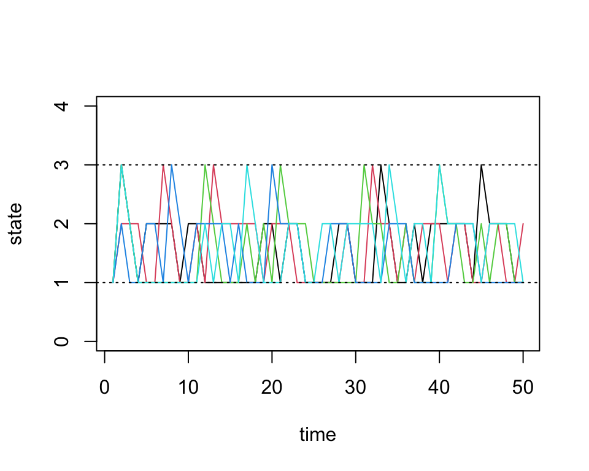
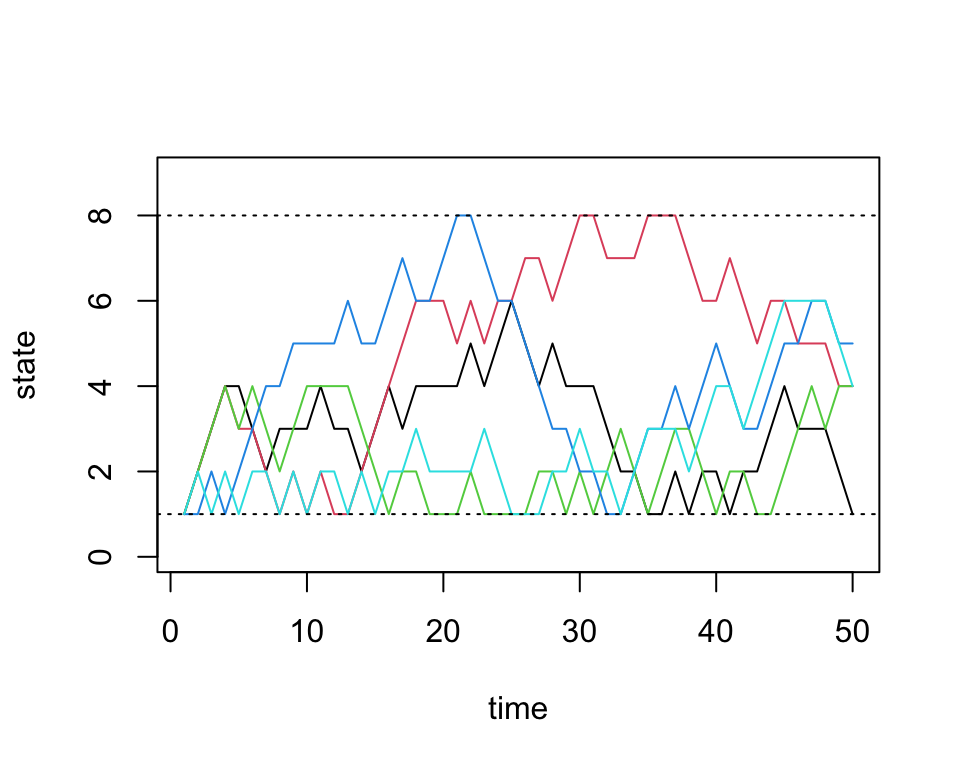

Last updated: 2026-01-15
Checks: 6 1
Knit directory: fiveMinuteStats/analysis/
This reproducible R Markdown analysis was created with workflowr (version 1.7.1). The Checks tab describes the reproducibility checks that were applied when the results were created. The Past versions tab lists the development history.
The R Markdown file has unstaged changes. To know which version of
the R Markdown file created these results, you’ll want to first commit
it to the Git repo. If you’re still working on the analysis, you can
ignore this warning. When you’re finished, you can run
wflow_publish to commit the R Markdown file and build the
HTML.
Great job! The global environment was empty. Objects defined in the global environment can affect the analysis in your R Markdown file in unknown ways. For reproduciblity it’s best to always run the code in an empty environment.
The command set.seed(12345) was run prior to running the
code in the R Markdown file. Setting a seed ensures that any results
that rely on randomness, e.g. subsampling or permutations, are
reproducible.
Great job! Recording the operating system, R version, and package versions is critical for reproducibility.
Nice! There were no cached chunks for this analysis, so you can be confident that you successfully produced the results during this run.
Great job! Using relative paths to the files within your workflowr project makes it easier to run your code on other machines.
Great! You are using Git for version control. Tracking code development and connecting the code version to the results is critical for reproducibility.
The results in this page were generated with repository version a641c10. See the Past versions tab to see a history of the changes made to the R Markdown and HTML files.
Note that you need to be careful to ensure that all relevant files for
the analysis have been committed to Git prior to generating the results
(you can use wflow_publish or
wflow_git_commit). workflowr only checks the R Markdown
file, but you know if there are other scripts or data files that it
depends on. Below is the status of the Git repository when the results
were generated:
Unstaged changes:
Modified: Makefile
Modified: analysis/simulating_discrete_chains_1.Rmd
Modified: analysis/simulating_discrete_chains_2.Rmd
Modified: analysis/stationary_distribution.Rmd
Note that any generated files, e.g. HTML, png, CSS, etc., are not included in this status report because it is ok for generated content to have uncommitted changes.
These are the previous versions of the repository in which changes were
made to the R Markdown
(analysis/simulating_discrete_chains_1.Rmd) and HTML
(docs/simulating_discrete_chains_1.html) files. If you’ve
configured a remote Git repository (see ?wflow_git_remote),
click on the hyperlinks in the table below to view the files as they
were in that past version.
| File | Version | Author | Date | Message |
|---|---|---|---|---|
| Rmd | a93d3bb | GitHub | 2022-01-31 | Update simulating_discrete_chains_1.Rmd |
| html | 5f62ee6 | Matthew Stephens | 2019-03-31 | Build site. |
| Rmd | 0cd28bd | Matthew Stephens | 2019-03-31 | workflowr::wflow_publish(all = TRUE) |
| html | 34bcc51 | John Blischak | 2017-03-06 | Build site. |
| Rmd | 5fbc8b5 | John Blischak | 2017-03-06 | Update workflowr project with wflow_update (version 0.4.0). |
| Rmd | 391ba3c | John Blischak | 2017-03-06 | Remove front and end matter of non-standard templates. |
| html | 8e61683 | Marcus Davy | 2017-03-03 | rendered html using wflow_build(all=TRUE) |
| html | c3b365a | John Blischak | 2017-01-02 | Build site. |
| Rmd | 67a8575 | John Blischak | 2017-01-02 | Use external chunk to set knitr chunk options. |
| Rmd | 5ec12c7 | John Blischak | 2017-01-02 | Use session-info chunk. |
| Rmd | dfaabc4 | mbonakda | 2016-02-02 | spin off inverse transform sampling into its own note |
| Rmd | f209a9a | mbonakda | 2016-01-30 | fix up typos |
| Rmd | ad8b7b5 | mbonakda | 2016-01-30 | update names |
| Rmd | 0f93e3c | mbonakda | 2016-01-30 | split simulating discrete markov chains into three separate notes |
See here for a PDF version of this vignette.
This document assumes basic familiarity with Markov chains.
In this note, we will describe a simple algorithm for simulating Markov chains. We first settle on notation and describe the algorithm in words.
Let \(P_{ij}\) denote the one-step transition probability. That is, \[ P_{ij} = P(X_{t+1} = j | X_{t} = i)\]
In what follows, we will assume that the transition probabilities do not depend on time \(t\). These are called time homogenous Markov chains.
The general idea of simulating discrete Markov chains can be illustrated through a simple example with 2 states. Assume our state space is \(\{1,2\}\) and the transition matrix is:
\[P = \begin{bmatrix} 0.7 & 0.3 \\ 0.4 & 0.6 \end{bmatrix}\]
We denote the \((i,j)\)-th entry of the matrix \(P\) as \(P_{ij}\).
Now assume that our Markov chain starts in state 1 so that \(X_0 = 1\). Since we are starting in state 1, our transition probabilities are defined by the first row of \(P\). Our chain can either remain in state \(1\) with probability \(P_{11}\) or transition to state \(2\) with probability \(P_{12}\). Therefore, to simulate \(X_1\), we must generate a random variable according to the probabilities \(P_{11}= P(X_1 = 1 | X_0 = 1) = 0.7\) and \(P_{12} = P(X_1 = 2 | X_0 = 1) = 0.3\).
In general, we can generate any discrete random variable according to a set of probabilities \(p = \{p_1, \ldots, p_K\}\) with Inverse Transform Sampling. Also note that this is equivalent to taking a single draw from a multinomial distribution with probability vector \(p\) – we use this method in the algorithm below.
Here we present a general algorithm for simulating a discrete Markov chain assuming we have \(S\) possible states.
We implement this in the following function, initializing the first state to \(1\):
# simulate discrete Markov chains according to transition matrix P
run.mc.sim <- function( P, num.iters = 50 ) {
# number of possible states
num.states <- nrow(P)
# stores the states X_t through time
states <- numeric(num.iters)
# initialize variable for first state
states[1] <- 1
for(t in 2:num.iters) {
# probability vector to simulate next state X_{t+1}
p <- P[states[t-1], ]
## draw from multinomial and determine state
states[t] <- which(rmultinom(1, 1, p) == 1)
}
return(states)
}Assume our probability transition matrix is: \[P = \begin{bmatrix} 0.7 & 0.2 & 0.1 \\ 0.4 & 0.6 & 0 \\ 0 & 1 & 0 \end{bmatrix}\]
We initialize this matrix in R below:
# setup transition matrix
P <- t(matrix(c( 0.7, 0.2, 0.1,
0.4, 0.6, 0,
0, 1, 0 ), nrow=3, ncol=3))Now we will use the function we wrote in the previous section to run several chains and plot the results:
num.chains <- 5
num.iterations <- 50
# each column stores the sequence of states for a single chains
chain.states <- matrix(NA, ncol=num.chains, nrow=num.iterations)
# simulate chains
for(c in seq_len(num.chains)){
chain.states[,c] <- run.mc.sim(P)
}Our function returns a vector that contains the states of our simulated chain through time. Recall that our state space is \(\{1,2,3\}\). Below, we visualize how these chains evolve through time:
matplot(chain.states, type='l', lty=1, col=1:5, ylim=c(0,4), ylab='state', xlab='time')
abline(h=1, lty=3)
abline(h=3, lty=3)
Next we will do a larger experiment with the size of our state space equal to 8. Assume our probability transition matrix is: \[P = \begin{bmatrix} 0.33 & 0.66 & 0 & 0 & 0 & 0 & 0 & 0 \\ 0.33 & 0.33 & 0.33 & 0 & 0 & 0 & 0 & 0 \\ 0 & 0.33 & 0.33 & 0.33 & 0 & 0 & 0 & 0 \\ 0 & 0 & 0.33 & 0.33 & 0.33 & 0 & 0 & 0 \\ 0 & 0 & 0 & 0.33 & 0.33 & 0.33 & 0 & 0 \\ 0 & 0 & 0 & 0 & 0.33 & 0.33 & 0.33 & 0 \\ 0 & 0 & 0 & 0 & 0 & 0.33 & 0.33 & 0.33 \\ 0 & 0 & 0 & 0 & 0 & 0 & 0.66 & 0.33 \\ \end{bmatrix}\]
We first initialize our transition matrix in R:
P <- t(matrix(c( 1/3, 2/3, 0, 0, 0, 0, 0, 0,
1/3, 1/3, 1/3, 0, 0, 0, 0, 0,
0, 1/3, 1/3, 1/3, 0, 0, 0, 0,
0, 0, 1/3, 1/3, 1/3, 0, 0, 0,
0, 0, 0, 1/3, 1/3, 1/3, 0, 0,
0, 0, 0, 0, 1/3, 1/3, 1/3, 0,
0, 0, 0, 0, 0, 1/3, 1/3, 1/3,
0, 0, 0, 0, 0, 0, 2/3, 1/3), nrow=8, ncol=8))After briefly studying this matrix, we can see that for states 2 through 7, this transition matrix forces the chain to either stay in the current state or move one state up or down, all with equal probability. For the edge cases, states 1 and 8, the chain can either stay or reflect towards the middle states.
Now we run our simulations with the transition matrix above:
num.chains <- 5
num.iterations <- 50
chain.states <- matrix(NA, ncol=num.chains, nrow=num.iterations)
for(c in seq_len(num.chains)){
chain.states[,c] <- run.mc.sim(P)
}And finally we plot the chains through time below:
matplot(chain.states, type='l', lty=1, col=1:5, ylim=c(0,9), ylab='state', xlab='time')
abline(h=1, lty=3)
abline(h=8, lty=3)
sessionInfo()
# R version 4.3.3 (2024-02-29)
# Platform: aarch64-apple-darwin20 (64-bit)
# Running under: macOS 15.7.1
#
# Matrix products: default
# BLAS: /Library/Frameworks/R.framework/Versions/4.3-arm64/Resources/lib/libRblas.0.dylib
# LAPACK: /Library/Frameworks/R.framework/Versions/4.3-arm64/Resources/lib/libRlapack.dylib; LAPACK version 3.11.0
#
# locale:
# [1] en_US.UTF-8/en_US.UTF-8/en_US.UTF-8/C/en_US.UTF-8/en_US.UTF-8
#
# time zone: America/Chicago
# tzcode source: internal
#
# attached base packages:
# [1] stats graphics grDevices utils datasets methods base
#
# loaded via a namespace (and not attached):
# [1] vctrs_0.6.5 cli_3.6.5 knitr_1.50 rlang_1.1.6
# [5] xfun_0.52 stringi_1.8.7 promises_1.3.3 jsonlite_2.0.0
# [9] workflowr_1.7.1 glue_1.8.0 rprojroot_2.0.4 git2r_0.33.0
# [13] htmltools_0.5.8.1 httpuv_1.6.14 sass_0.4.10 rmarkdown_2.29
# [17] evaluate_1.0.4 jquerylib_0.1.4 tibble_3.3.0 fastmap_1.2.0
# [21] yaml_2.3.10 lifecycle_1.0.4 whisker_0.4.1 stringr_1.5.1
# [25] compiler_4.3.3 fs_1.6.6 Rcpp_1.1.0 pkgconfig_2.0.3
# [29] later_1.4.2 digest_0.6.37 R6_2.6.1 pillar_1.11.0
# [33] magrittr_2.0.3 bslib_0.9.0 tools_4.3.3 cachem_1.1.0